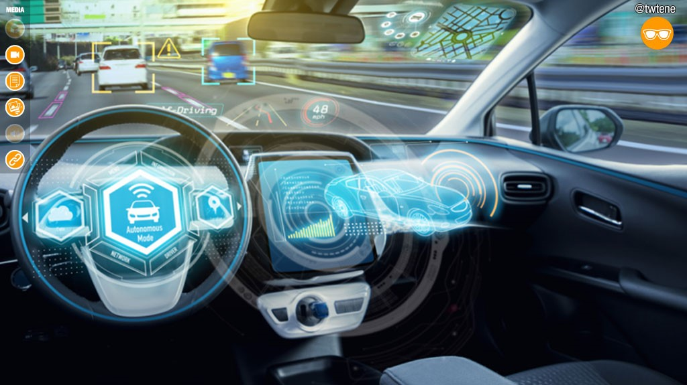

What is The AUDI Driver Assistance Systems ?
Audi assists drivers with a broad range of assistance systems, from the turn and parking assistants to the camera-based road sign recognition. They deliver more safety, convenience, and efficiency, and they pave the way for piloted driving. If you are looking to purchase an Audi vehicle and you are looking for more information about the safety features of the vehicle, then you have come to the right place at Pfaff Audi in Vaughan, ON. In this article by Pfaff Audi, we share some information about the Audi Driver Assitance System.

Turn Assist
Turn assist monitors the road lane with oncoming traffic by means of radar sensors, the front camera, and, in certain models, a laser scanner. Monitoring is initiated as soon as the driver sets the turn signal. When driving off from a stop, or during slow driving up to a speed of 10 km/h, the system can intervene by applying the brakes to prevent the car from colliding with an oncoming vehicle when turning left or right. This brake intervention keeps the vehicle within its own driving lane. The driver is informed of the intervention by an indicator in the instrument cluster.

Adaptive Cruise Control
Adaptive cruise control offers relief to drivers especially on long trips and in stop-and-go traffic. It maintains a preset distance to the vehicle ahead by automatically accelerating and braking. The driver can choose from five distance levels and adjust acceleration and control system dynamics with Audi drive select. The system uses radar sensors and a front camera. They detect vehicles ahead and measure the distance to them. In interplay with S tronic or Tiptronic, the system covers the entire speed range from 0 to 250 km/h. With a manual transmission, it starts at 30 km/h. When the system is deactivated, the distance indicator shows the distance to the car ahead and warns drivers when they are tailgating.
Active Lane Assist
Operating at speeds from 65 km/h, Audi active lane assist helps the driver keep the vehicle in the driving lane. A camera detects lane lines and the track that the car is following between them. In this process, the camera can distinguish between yellow lines in construction zones and standard white markings. If the car approaches a line without the turn signal being activated, the system helps the driver to steer back into the lane by means of gentle but noticeable interventions in the electromechanical power steering. In the MMI system, the driver sets how early the control intervention should occur. In the case of an early steering intervention point, the system guides the driver towards the middle of the lane by gentle, centering steering interventions.
Pre Sense 360
The Audi pre sense 360˚ detects collision hazards all around the car and initiates specific safety measures. It includes the following driver assistant systems: Audi pre sense front, side, rear, and basic. There are several other features that make up the Audi Driver Assistance System. If you are looking for more in-depth information about this, we encourage you to get in touch with a Pfaff Audi representative today.